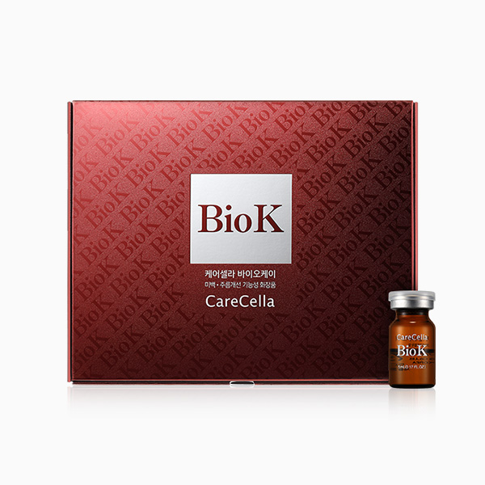

케어셀라 바이오 케이
식물 줄기세포 성분의 피부 토탈케어 앰플
- 회원가입 없이 회원가
- 지쿱 본사 정품 직접 발송
- 5만 원 이상 무료배송
스페셜팩으로 더 알뜰하게
- 바이오케이 2개 + 에어브러쉬 팩 — 회원가 398,000원
- 바이오케이 8개 + 에어브러쉬 2개 팩 — 회원가 1,258,000원
케어셀라 바이오 케이 상세 설명 · 원료와 특징
케어셀라 바이오케이 피부를 위한 토탈 케어 솔루션 Bio K 바이오케이(Bio K)란?
바이오케이(Bio K)는 CK밸런스를 개발하는 과정에서, 화장품에도 이런 식물 기원 기술을 적용시키려는 노력에서 출발하여 만들어진 제품 입니다.
현재 BIO K는 CareCella의 식물 줄기 세포 브랜드로서, 제너럴바이오 R&D 센터의 식물 캘러스 연구를 기반으로 화장품에 이 기술을 접목 시키고 있습니다.
토탈케어 각종 미용 성분의 최적 배합이 만든 토탈 솔루션으로 피부 건강에 도움을 줍니다.
주름 개선 미백 피부 보습 피부결 개선 영양 공급 생기있는 피부 정제수 베이스가 아닌, 쑥부쟁이캘러스추출물로 제조 제너럴바이오에서 직접 개발, 제조한 성분으로 피부 탄력에 도움이 되고 건강한 피부로 가꾸어 주는 성분 입니다.
쑥부쟁이란?
쑥부쟁이는 다른 말로 권영초, 왜쑥부쟁이, 가새쑥부쟁이라고도 합니다.
햇빛이 비교적 잘 들고 습기가 약간 있는 산과 들에서 흔하게 자라는 여러해살이 풀입니다.
인삼캘러스배양추출물 + 쑥부쟁이캘러스추출물 + 돌콩피토플라센타추출물의 트리플 효과 식물 줄기 세포의 일종인 인삼캘러스배양추출물과 돌콩피토플라센타추출물이 피부 장벽을 강화해주고, 쑥부쟁이캘러스추출물이 영양을 공급합니다.
트리플 효과로 강화된 원료는 피부 보호와 영양 공급을 해주며 피부 스트레스를 완화하여 민감해진 피부에 도움을 줍니다.
인삼캘러스 배양추출물 쑥부쟁이캘러스 추출물 돌콩피토플라센타 GF(Growth Factor) 펩타이드 복합체의 최적의 피부 흡수 시스템 EGF, bFGF, IGF-1, VEGF, TGF-β1 5가지의 Growth Factor로 피부에 영양을 공급하여 줍니다.
GF(Growth Factor) 복합체 Liposome encapsulation technoloy를 통한 최적의 피부 흡수 시스템으로 제작 최적의 liposome size로 피부 투과를 촉진 *원료적 특성에 한함 5가지 복합 펩타이드로 탄력, 피부결 개선 효과 쿠퍼펩타이드(카퍼트리펩타이드-1), 펩타이드 콤플렉스(아세틸헥사펩타이드-8 니코티노일트리펩타이드-1, 헥사펩타이드-9, 트라이펩타이드-29) 5가지 복합 펩타이드는 피부 탄력과 피부 결 개선 효과에 도움을 줍니다.
피부 진정에 도움 이 되는 성분 함유 히알루론산(소듐하이알루로네이트), 알로에베라잎즙 함유로 촉촉한 피부에 도움이 되며, 매끄러운 피부로 가꾸어 줍니다.
히알루론산 (소듐하이알루로네이트) 알로에베라잎즙 피부 스트레스 완화를 위한 식물성 추출물 함유 녹차추출물, 쐐기풀추출물, 병풀추출물, 초피나무열매추출물, 할미꽃추출물, 우스니아추출물 - 식물성 추출물이 함유되어 피부 진정과 피부 스트레스 완화에 도움이 됩니다.
제품 주요 성분 인삼캘러스배양추출물 피부에 활력을 주어 건강한 피부로 가꿔줍니다.
돌콩피토플라센타추출물 돌콩피토플라센타는 식물이 성장할 때 열매에 양분을 공급해 주는 필수 영양소 중 하나입니다. '발아대두'로부터 저온 추출과 분리 정제 기법을 통해 추출합니다. 피부 보호력 강화에 도움을 줍니다.
쑥부쟁이는 다른말로 권영초, 왜쑥부쟁이, 가새쑥부쟁이라고도 합니다. 햇빛이 비교적 잘 들고 습기가 약간있는 산과 들에서 흔하게 자라는 여래해살이 풀입니다. 피부 탄력에 도움이 되고, 건강한 피부로 가꾸어 주는 성분 입니다.
GF 펩타이드 콤플렉스 에스에이치-올리고펩타이드-1, 에스에이치-폴리펩타이드-1, 에스에이치-올리고펩타이드-2,에스에이치-폴리펩타이드-9, 에스에이치-폴리펩타이드-22등의 성분이 함유되어 피부 장벽을 강화하며 영양을 공급합니다.
히알루론산 (소듐하이알루로네이트) 피부 수분 증발을 막고 적절한 수분 상태를 유지하도록 도움을 줍니다.
병풀추출물 센텔라아시아티카는 인도양 연안 마다가스카르 섬의 신비한 식물로 원주민들이 오래전부터 자극받은 피부에 사용한 귀한 식물입니다.
알란토인 주로 컴프리라는 식물에서 추출한 성분으로 거칠어진 피부를 개선해 주고 매끄럽게 만들어 주며, 피부의 보습 기능을 좋게 해주어 피부 장벽 강화에 도움을 줍니다.
*상기 설명은 원료적 특성에 한함 독일 피부과학연구소 세계적인 독일 피부과학연구소 더마테스트(dermatest)에 24시간, 48시간, 72시간 인체 피부 적용 실험을 의뢰 “피부자극없음”인 Excellent를 획득 하였습니다.
브랜드 스토리 케어셀라는 ‘낫게하다’를 의미하는 Care 와 라틴어로 세포를 의미하는 Cella 의 합성어로 피부 본연의 아름다움을 찾아주는 시작점을 뜻합니다.
자연에서 찾은 식물성 원료를 사용하여 각 피부에 맞는 제품을 개발하고 전문적인 케어 가이드를 제안하는 홈 뷰티 화장품 브랜드 입니다.
사용 방법 1회 1병을 개봉하여 피부에 골고루 펴 바른 후 흡수시켜 줍니다.
이런 피부에 추천합니다.
영양 성분이 많은 기능성 앰플 제품 을 찾으신 분 피부 나이로 생긴 잡티 로 고민이신 분 매끄러운 피부 결 을 원하시는 분 피부 트러블 집에서 피부 관리용 제품을 사용 하고 싶으신 분 각종 인증 사항 비코프인증 획득!
비코프인증(B-Corp Certified) 이란?
B-Corp은 비즈니스를 통해 사회 환경적 문제를 해결하고 사회에 긍정적인 영향을 끼치는 기업을 확대하기 위해서 2007년 BLab (미국비영리 조직)이 만든 글로벌 사회적 기업 인증 제도입니다
국제 화장품 규격(CosmeticsGMP)ISO22716인증 획득!
CosmeticsGMP(GoodManufacturingPractices)화장품 우수제조관리기준입니다.화장품 기업의 제조 시설관리 기준(GMP)뿐만 아니라, 제품 안전성 관리 시스템(업무체계)의 실행 및 유지가 매우 중요한 평가 요소입니다.품질 및 안전이 보증된 화장품을 제조하기 위한 제품, 시설 및 공정 기준을 제시합니다.총 17개의 요구 사항으로 이루어져 있으며,이 요구 사항들은 인적자원,건물,장비 등의 인프라 관리를 기반으로 원재료에서 완제품까지의 제조 관리 기준을 통과해야만 받을 수 있는 인증입니다
CGMP(우수화장품 제조기준)인증 획득!
CGMP 인증 CGMP규정의 목표는 소비자에게 신뢰받는 안전하고 우수한 품질의 제품을 제조하기 위하여 작업장의 구조,설비를 비롯하여 원료의 구입으로부터 생산,포장,출하에 이르기까지의 전 공정에 걸쳐 생산과 품질의 관리에 대한 체계적인 기준으로 평가해 모든 단계를 표준화된 기준에 따라 체계적으로 관리해 제품의 품질보증을 달성하는 기업에게 주는 인증입니다.
가족친화우수기업 인증 획득!
가족친화인증 가족친화제도를 모범적으로 운영하는 기업 및 공공기관에 대하여 심사를 통해 인증을 부여하는 제도입니다.가족친화인증 기업은 근로자가 일에 집중하도록 하여 기업 생산성과 경쟁력 강화하고 출산율 제고,고용 안정 등으로 국가경제 발전에 기여할 뿐 아니라 가족친화경영 확산을 통한 근로자와 가족 구성원의 삶의 질을 향상시키는 바른 기업 문화를 확산 시킵니다.
지쿱 본사 제품 상세페이지 내용을 옮겨 정리했어요.
상품정보제공고시
| 품명 | 케어셀라 바이오케이 |
|---|---|
| 용량 | 5mL X 20ea |
| 사용기간 | 제조일로부터 36개월 |
| 사용방법 | 1. 얼굴을 깨끗이 세안 합니다. 2. 1회 한병을 개봉하여 피부에 골고루 펴 바른 후 흡수 시켜 줍니다. *개인의 피부 컨디션에 따라 사용량은 조절 가능합니다. |
| 화장품 제조업자 및 화장품 책임 판매 업자 | 제너럴바이오(주) |
| 제조국 | 대한민국 |
| 전성분 | 쑥부쟁이캘러스추출물, 글리세린, 다이프로필렌글라이콜, 부틸렌글라이콜, 정제수, 1,2-헥산다이올, 나이아신아마이드, 락토바실러스/콜라겐발효여과물, 알란토인, 인삼캘러스배양추출물, 돌콩피토플라센타추출물, 락토바실러스/레몬껍질발효추출물, 오렌지껍질추출물, 폴리글리세릴-10라우레이트, 아데노신, 소듐하이알루로네이트, 카프릴릴글라이콜, 알로에베라잎즙, 프로판다이올, 카퍼트라이펩타이드-1, 알지닌, 소듐포스페이트, 하이드로제네이티드레시틴, 헥사펩타이드-9, 트라이펩타이드-29, 아세틸헥사펩타이드-8, 니코티노일트라이펩타이드-1, 녹차추출물, 병풀추출물, 쐐기풀추출물, 에틸헥실글리세린, 초피나무열매추출물, 할미꽃추출물, 우스니아추출물, 에스에이치-올리고펩타이드-1, 에스에이치-폴리펩타이드-1, 에스에이치-올리고펩타이드-2, 에스에이치-폴리펩타이드-9, 에스에이치-폴리펩타이드-22 |
| pH | 6.2 ± 1.0 |
| 기능성 | 미백, 주름개선 기능성 화장품 |
| 주의사항 | 1. 화장품 사용 시 또는 사용 후 직사광선에 의하여 사용부위가 붉은 반점, 부어오름 또는 가려움증 등의 이상 증상이나 부작용이 있는 경우 전문의 등과 상담할 것 2. 상처가 있는 부위 등에는 사용을 자제할 것 3. 보관 및 취급 시의 주의사항 가. 어린이의 손이 닿지 않는 곳에 보관할 것 나. 직사광선을 피해서 보관할 것 |
| 품질보증기준 | 본 상품의 품질보증 및 피해보상에 관한 사항은 관련 법률 및 공정거래위원회 고시 [소비자분쟁해결기준]에 따릅니다. |
| 소비자 상담 문의 | 카카오톡으로 문의 주시면 지쿱 본사로 접수해 드립니다. |
바이오케이 다른 제품
배송·교환·반품
지쿱 본사에서 직접 발송해요. 50,000원 이상 주문 시 무료배송, 50,000원 미만은 배송비 2,500원이에요. A/S·교환·반품은 카카오톡으로 문의 주시면 지쿱 본사로 접수해 드려요.